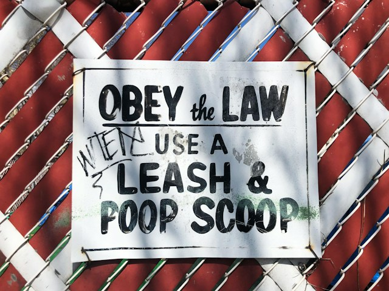

DOCENCIA
He enseñado cursos de pregrado y postgrado, tanto en persona como en línea. Más abajo se encuentran los programas de cursos que he impartido:

Derecho y sociedad (nivel avanzado de pregrado, Criminología, Universidad de Ottawa)
Métodos de investigación en administración pública (pregrado, Administración pública, Universidad de Ottawa)
Penología (posgrado, Derecho, Universidad de Sherbrooke)
Determinación de la pena (posgrado, Derecho, Universidad de Sherbrooke)
Prevención del delito (posgrado, Derecho, Universidad de Sherbrooke)
Antes de la IA generativa, preparé este documento (en francés) para ayudar a los estudiantes a redactar sus trabajos académicos. Como parte del Certificado en Docencia Universitaria que cursé en la Universidad de Ottawa, preparé este video (en francés) para mostrar a los y las estudiantes de derecho cómo las ciencias sociales pueden ayudarlos a convertirse en mejores juristas.